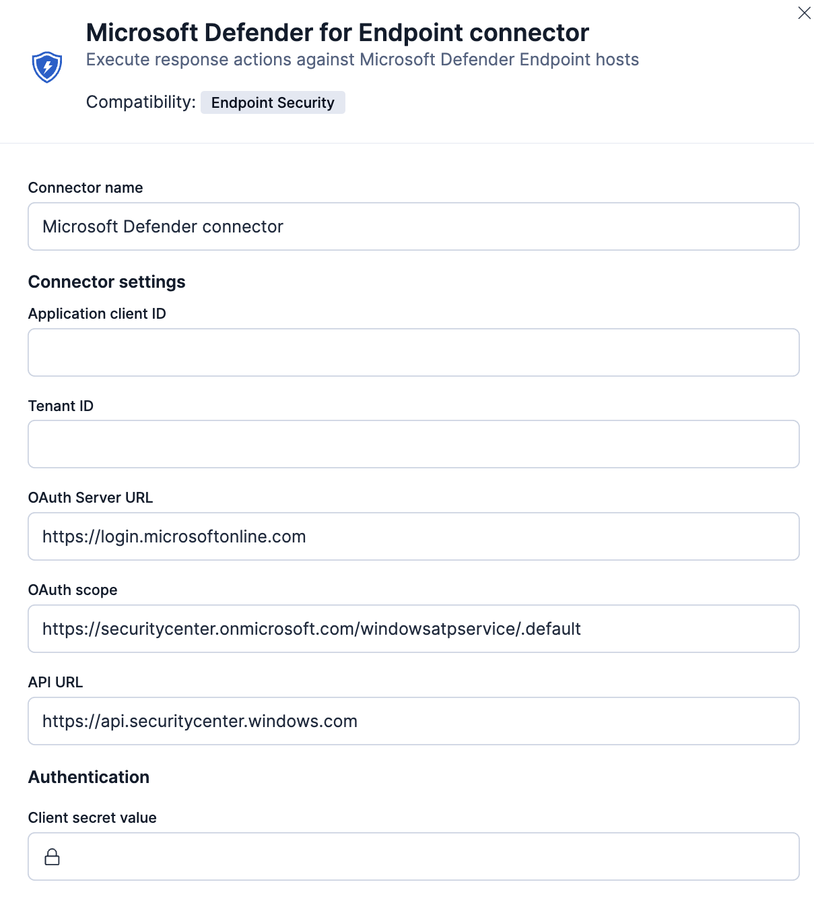
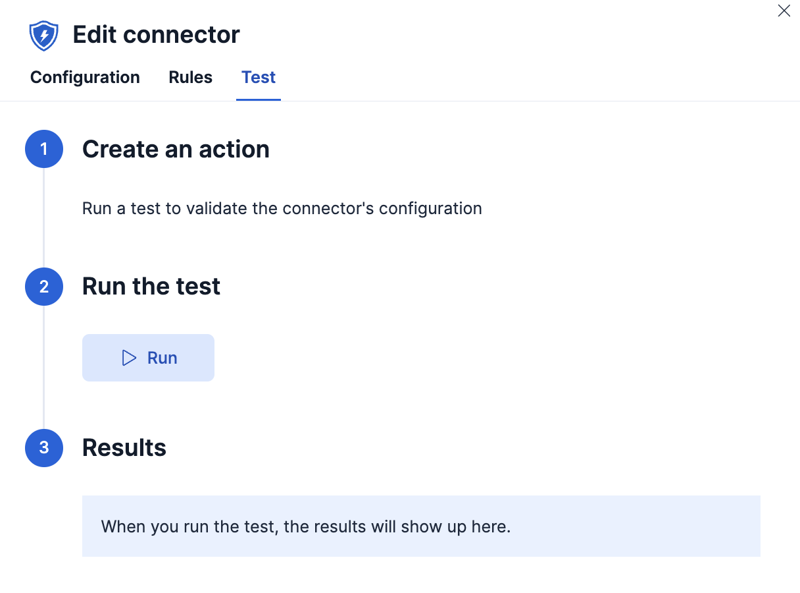

IMPORTANT: This documentation is no longer updated. Refer to Elastic's version policy and the latest documentation.
Microsoft Defender for Endpoint connector and action
editThe Microsoft Defender for Endpoint connector enables you to perform actions on Microsoft Defender-enrolled hosts.
Create connectors in Kibana
editYou can create connectors in Stack Management > Connectors or as needed when you’re creating a rule. For example:

Connector configuration
editMicrosoft Defender for Endpoint connectors have the following configuration properties:
- API URL
-
The URL of the Microsoft Defender for Endpoint API. If you are using the
xpack.actions.allowedHostssetting, make sure the hostname is added to the allowed hosts. - Application client ID
- The application (client) identifier for your app in the Azure portal.
- Client secret value
- The client secret for your app in the Azure portal.
- Name
- The name of the connector.
- OAuth scope
- The OAuth scopes or permission sets for the Microsoft Defender for Endpoint API.
- OAuth server URL
- The OAuth server URL where authentication is sent and received for the Microsoft Defender for Endpoint API.
- Tenant ID
- The tenant identifier for your app in the Azure portal.
Test connectors
editYou can test connectors as you’re creating or editing the connector in Kibana. For example:

Configure Microsoft Defender for Endpoint
editBefore you create the connector, you must create a new application on your Azure domain. The procedure to create an application is found in the Microsoft Defender documentation.
Make note of the client ID, client secret, and tenant ID, since you must provide this information when you create your connector.